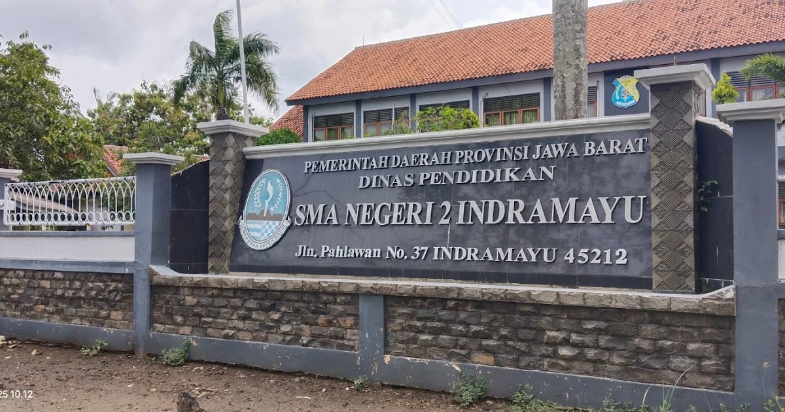

Tentang Diriku
Perkenalan singkat tentang diriku.
Halo! Saya Niyaz Ahmad Dhiyaulhaq, seorang pelajar yang memiliki semangat tinggi untuk terus belajar, berkembang, dan memberikan manfaat bagi orang lain. Saya senang mengikuti berbagai kegiatan akademik maupun non-akademik, terutama yang berkaitan dengan bahasa Inggris, kepemimpinan, dan pengembangan diri. Bagi saya, setiap pengalaman adalah kesempatan untuk belajar menjadi pribadi yang lebih baik, disiplin, serta siap menghadapi tantangan di masa depan.
Timeline Pendidikan
Perjalanan pendidikanku.
-

SD
SDN 3 Margadadi Indramayu
-

SMP
SMP IT Bina Insan Mulia Cirebon
-

SMA
SMAN 2 Indramayu
Keahlian
Kombinasi kemampuan teknis dan interpersonal yang terus kukembangkan.
Hard Skills
- Public Speaking
- English Speaking
- Content & Marketing
- Drawing & Art
Soft Skills
- Leadership
- Communication
- Teamwork
- Problem Solving
Prestasi
Beberapa prestasi yang telah diraih dalam perjalanan pendidikan dan pengalamanku.
-
Santri of The Year Bina Insan Mulia
Meraih gelar Santri of The Year 2026 Pondok Pesantren Bina Insan Mulia.
Lihat Sertifikat -
Medali Emas Olimpiade Sains Pelajar Nasional Kategori Bahasa Inggris
Meraih medali emas dalam kompetisi bahasa Inggris tingkat nasional yang diselenggarakan oleh GEMANESIA (Generasi Maju Indonesia) tahun 2026.
Lihat Sertifikat -
Medali Emas Indonesian Youth Science Competition Kategori Kimia
Meraih medali emas dalam kompetisi kimia tingkat nasional yang diselenggarakan oleh FOSNAS (Festival Olimpiade Sains Nasional) tahun 2026.
Lihat Sertifikat -
Tamyiz Qiroatul Kutub dan Terjemahan Al-Quran 24 Juz
Telah menyelesaikan program Qiroatul Kutub dan Terjemahan Al-Quran 24 Juz dengan metode Tamyiz Pondok Pesantren Bina Insan Mulia Cirebon Tahun 2025.
Lihat Sertifikat -
Tahfidz Al-Quran 5 Juz
Telah menyelesaikan program Tahfidz 5 juz Al-Quran dengan predikat Mumtaz Pondok Pesantren Bina Insan Mulia Cirebon tahun 2024.
Lihat Sertifikat
Pengalaman
Beberapa pengalaman dan organisasi yang telah kujalani.
-
World Muslim Scout Jamboree
Mengikuti kegiatan World Muslim Scout Jamboree sebagai anggota tim dari delegasi Bina Insan Mulia di kancah internasional tahun 2025.
-
Speech in English
Sering berpidato bahasa Inggris di Bilingual Meeting dalam rangka acara mingguan Pondok Pesantren Bina Insan Mulia.
-
K-Pop Dance
Menampilkan tarian K-Pop untuk acara wisuda santri Pondok Pesantren Bina Insan Mulia tahun 2024.
Motto Hidup
“Be yourself and be your best.”